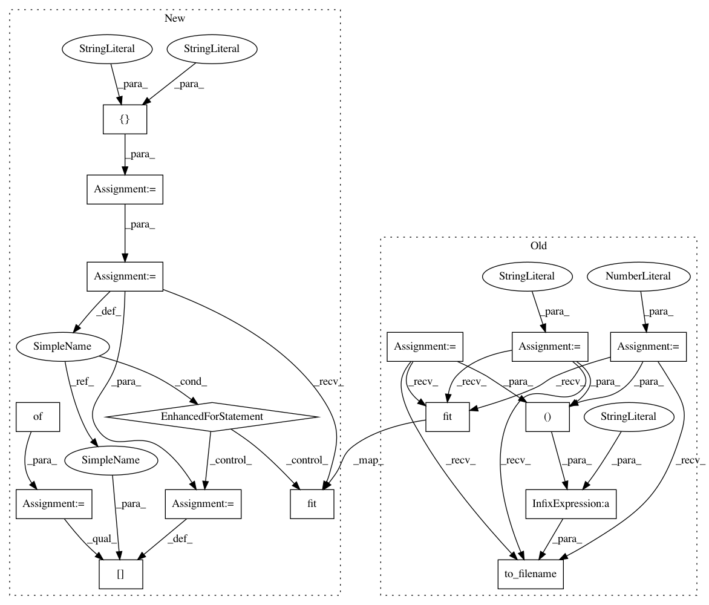

275f81c53f2868c1be24e94e19c0c4e041ea48c8,plot_poldrack_space_net.py,,,#,6
Before Change
////// Fit and predict ////////////////////////////////////////////////////////////////////////////////////////////////////////////////////
import os
from nilearn.decoding import SpaceNetRegressor
penalty = "TV-L1"
l1_ratio = .3
alpha = None
decoder = SpaceNetRegressor(memory=mem, mask=mask_img, verbose=2,
n_jobs=int(os.environ.get("N_JOBS", 1)),
l1_ratio=l1_ratio, penalty=penalty, alpha=alpha,
screening_percentile=100., tol=1e-8,
max_iter=1000)
decoder.fit(X_train, y_train) // fit
coef_niimg = decoder.coef_img_
coef_niimg.to_filename("poldrack_%s(l1_ratio=%g, alpha=%s)_weights.nii" % (
penalty, l1_ratio, alpha))
////// Visualization //////////////////////////////////////////////////////////////////////////////////////////////////////////////////////////
import matplotlib.pyplot as plt
from nilearn.image import mean_img
After Change
////// Fit and predict ////////////////////////////////////////////////////////////////////////////////////////////////////////////////////
import os
from nilearn.decoding import SpaceNetRegressor
penalties = ["smooth-lasso", "TV-L1"]
decoders = {}
for penalty in penalties:
decoder = SpaceNetRegressor(memory=mem, mask=mask_img, verbose=2,
n_jobs=int(os.environ.get("N_JOBS", 1)),
penalty=penalty)
decoder.fit(X_train, y_train) // fit
decoders[penalty] = decoder
////// Visualization //////////////////////////////////////////////////////////////////////////////////////////////////////////////////////////
import matplotlib.pyplot as plt
from nilearn.image import mean_img
from nilearn.plotting import plot_stat_map
background_img = mean_img(X_train)
In pattern: SUPERPATTERN
Frequency: 4
Non-data size: 16
Instances
Project Name: nilearn/nilearn
Commit Name: 275f81c53f2868c1be24e94e19c0c4e041ea48c8
Time: 2015-07-28
Author: elvis.dohmatob@inria.fr
File Name: plot_poldrack_space_net.py
Class Name:
Method Name:
Project Name: nilearn/nilearn
Commit Name: 275f81c53f2868c1be24e94e19c0c4e041ea48c8
Time: 2015-07-28
Author: elvis.dohmatob@inria.fr
File Name: plot_poldrack_space_net.py
Class Name:
Method Name:
Project Name: nilearn/nilearn
Commit Name: 986aacd1c7ed2f7000cc9816057f96d59701e066
Time: 2015-07-28
Author: elvis.dohmatob@inria.fr
File Name: plot_poldrack_space_net.py
Class Name:
Method Name:
Project Name: nilearn/nilearn
Commit Name: 36dd7cf04dcd4e71ca4e1a0086713c51759fd42d
Time: 2015-07-28
Author: elvis.dohmatob@inria.fr
File Name: plot_poldrack_space_net.py
Class Name:
Method Name:
Project Name: nilearn/nilearn
Commit Name: 50159dd0ddabf9d9bb637f9d8d0afba7ba43fbf2
Time: 2015-07-28
Author: elvis.dohmatob@inria.fr
File Name: plot_poldrack_space_net.py
Class Name:
Method Name: